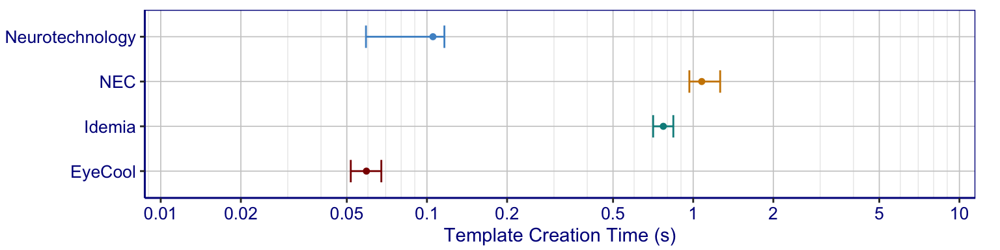

Computation times are measured as the the elapsed real time (i.e., “wall clock” time) as opposed to CPU time. Timing estimates were computed on unloaded machines with only a single process dedicated to biometric operations. The test machines are Dell PowerEdge M910 blades with Dual Intel Xeon X7560 2.3 GHz CPUs (eight cores per processor).
| Dataset: | Operational Dataset 4 |
| Samples used: | Both eyes |
| Enrolled Population: | 500K people |
| Enrollment Method: | One enrollment session per person |
| Number of Searches: | NULL |

|
Gaithersburg, MD 20899 301-975-2000 | |
| How are we doing? Feedback | |